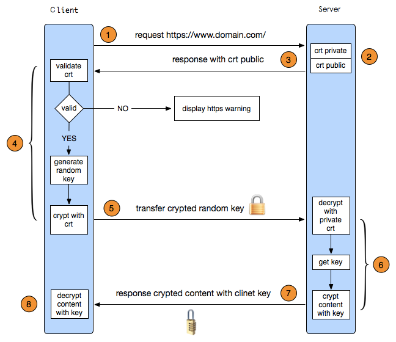

JAVA
基础题
String s = new String(“abc”) 创建了几个对象
死锁
HashMap什么情况下发生死链
HashTable/hashMap-线程不安全 区别
Java什么时候会发生内存泄漏-heap leak
-Xms<size>
-Xmx<size>
Unclosed Streams or Unclosed Connections 资源未关闭（数据库连接／文件）
Adding Objects with no hashCode() and equals() into a HashSet
Static Field Holding On to the Object Reference 单例对象
Calling String.intern() on Long String
容器中的对象
堆外内存
Do Profiling: Visual VM
JAVA：OutOfMemoryError（OOM）
- 堆内存溢出
- 虚拟机栈和本地方法栈溢出
- -Xss设置栈大小 -Xoss设定本地方法栈大小
- 不能减少线程或者换64虚拟机，减少最大堆和减少栈容量
- 方法区和运行时常量池溢出（permGen）
- -XX：Permsize/ -XX:MaxPermSize
分布式高并发系统如何保证对外接口的幂等性
- 在请求参数中附带唯一标识作为唯一键，唯一标识可以由业务字段加时间戳低位拼接而成，或者使用snowflake、UUID等ID生成算法
- 找出业务本身的唯一约束。比如一个客户对同一只新股只能申购一次，那么客户号加申购代码可以组成唯一键，去重表
多线程
- Running：执行中。
- Ready：除了CPU，其他资源都ok，等待调度。
- Blocked：等待某个事件，如键盘输入。
状态切换（4种情况）：
- Ready到Running：CPU调度到了，开始执行
- Running到Ready：时间片到了
- Running到Blocked：执行到某个时候，需要等待某个事件
- Blocked到Ready：等待的事件发生了，进入Ready等待CPU调度
在性能上来说，如果竞争资源不激烈，两者的性能是差不多的，而当竞争资源非常激烈时（即有大量线程同时竞争），此时ReentrantLock的性能要远远优于synchronized。所以说，在具体使用时要根据适当情况选择。在JDK1.5中，synchronized是性能低效的。因为这是一个重量级操作，它对性能最大的影响是阻塞的是实现，挂起线程和恢复线程的操作都需要转入内核态中完成，这些操作给系统的并发性带来了很大的压力。相比之下使用Java提供的ReentrankLock对象，性能更高一些。到了JDK1.6，发生了变化，对synchronize加入了很多优化措施，有自适应自旋，锁消除，锁粗化，轻量级锁，偏向锁等等。导致在JDK1.6上synchronize的性能并不比Lock差。官方也表示，他们也更支持synchronize，在未来的版本中还有优化余地，所以还是提倡在synchronized能实现需求的情况下，优先考虑使用synchronized来进行同步。
JVM
内存模型

堆内存（Heap Memory）： 存放Java对象
堆内存由垃圾回收器的自动内存管理系统回收。
堆内存分为两大部分：新生代和老年代。比例为1：2。
老年代主要存放应用程序中生命周期长的存活对象。
新生代又分为三个部分：一个Eden区和两个Survivor区，比例为8：1：1。
Eden区存放新生的对象。
Survivor存放每次垃圾回收后存活的对象。Java虚拟机（这里默认指Hotspot）采用的是分代回收算法
非堆内存（Non-Heap Memory）： 存放类加载信息和其它meta-data
其它（Other）： 存放JVM 自身代码等
分代回收算法（复制算法和标记整理算法）
- 复制算法：适用于存活对象很少。回收对象多-新生代
- 标记整理算法: 适用用于存活对象多，回收对象少-老年代
堆区划分为老年代（Old Generation）和新生代（Young Generation），老年代的特点是每次垃圾收集时只有少量对象需要被回收，而新生代的特点是每次垃圾回收时都有大量的对象需要被回收
参考：http://jayfeng.com/2016/03/11/理解Java垃圾回收机制/
为什么不是一块Survivor空间而是两块？
这里涉及到一个新生代和老年代的存活周期的问题，比如一个对象在新生代经历15次（仅供参考）GC，就可以移到老年代了。问题来了，当我们第一次GC的时候，我们可以把Eden区的存活对象放到Survivor A空间，但是第二次GC的时候，Survivor A空间的存活对象也需要再次用Copying算法，放到Survivor B空间上，而把刚刚的Survivor A空间和Eden空间清除。第三次GC时，又把Survivor B空间的存活对象复制到Survivor A空间，如此反复。
所以，这里就需要两块Survivor空间来回倒腾。
为什么Eden空间这么大而Survivor空间要分的少一点？
新创建的对象都是放在Eden空间，这是很频繁的，尤其是大量的局部变量产生的临时对象，这些对象绝大部分都应该马上被回收，能存活下来被转移到survivor空间的往往不多。所以，设置较大的Eden空间和较小的Survivor空间是合理的，大大提高了内存的使用率，缓解了Copying算法的缺点。
我看8：1：1就挺好的，当然这个比例是可以调整的，包括上面的新生代和老年代的1：2的比例也是可以调整的。
新的问题又来了，从Eden空间往Survivor空间转移的时候Survivor空间不够了怎么办？直接放到老年代去。
Eden空间和两块Survivor空间的工作流程
现在假定有新生代Eden，Survivor A， Survivor B三块空间和老生代Old一块空间。
// 分配了一个又一个对象 |
触发GC的类型
了解这些是为了解决实际问题，Java虚拟机会把每次触发GC的信息打印出来来帮助我们分析问题，所以掌握触发GC的类型是分析日志的基础。
GC_FOR_MALLOC: 表示是在堆上分配对象时内存不足触发的GC。
GC_CONCURRENT: 当我们应用程序的堆内存达到一定量，或者可以理解为快要满的时候，系统会自动触发GC操作来释放内存。
GC_EXPLICIT: 表示是应用程序调用System.gc、VMRuntime.gc接口或者收到SIGUSR1信号时触发的GC。
GC_BEFORE_OOM: 表示是在准备抛OOM异常之前进行的最后努力而触发的GC。
Algorithm
- 求第K大的数
- 快速排序
Https
- 交互流程

- 为什么需要交换密钥
- 防止中间人攻击
- RSA 加密效率较低（密钥交换时的非对称解密计算量占整个握手过程的 90% 以上）
- RSA 加密的明文长度不超过密钥长度。明文过长需自己处理分段加密（比如现在常用的公钥长度是 2048 位，意味着待加密内容不能超过 256 个字节。）
- 建议优先支持 RSA 和 ECDHE_RSA 密钥交换算法
防止盗链
- use https
- 接口参数设置
data=xxx&tm=xxx&sign=xxxx
data: 按照字母顺序／tm:时间戳／sign:data + tm + salt（固定字符串）
采用MD5 校验，或者其他AES／DES／非对称算法加密
- 本地加密混淆
- Android 加入so，so对签名进行认证，监听调试端口，禁止模拟器运行（模拟器的一些参数),so需要混淆，函数结构混淆
- 服务端简单限制
- user-agent 和 refer 限制，甚至用socket
- 验证登录，cookie／session／token
- 接口请求频次
- 不建议封ip，共用ip出口比较多
- deviceId最好服务器生成，本地容易伪造
- 返回结果加密
- 定期检查访问日志
Android 中的设计模式
- Context/Java Stream的装饰者/包装者模式（Decorator/Wrapper pattern）
- 适配器模式（ListView等的Adapter）
前端
跨域问题
1、同源策略
同源策略限制从一个源加载的文档或脚本如何与来自另一个源的资源进行交互。
一个源的定义：如果协议，端口（如果指定了一个）和主机对于两个页面是相同的，则两个页面具有相同的源。
2、主域相同的跨域
document.domain的场景只适用于不同子域的框架间的交互，及主域必须相同的不同源。
3、完全不同源的跨域（两个页面之间的通信）
3.1、通过location.hash跨域
假设域名a.com下的文件cs1.html要和jianshu.com域名下的cs2.html传递信息。
1、cs1.html首先创建自动创建一个隐藏的iframe，iframe的src指向jianshu.com域名下的cs2.html页面。
2、cs2.html响应请求后再将通过修改cs1.html的hash值来传递数据。
3、同时在cs1.html上加一个定时器，隔一段时间来判断location.hash的值有没有变化，一旦有变化则获取获取hash值。
注：由于两个页面不在同一个域下IE、Chrome不允许修改parent.location.hash的值，所以要借助于a.com域名下的一个代理iframe。
优点：1.可以解决域名完全不同的跨域。2.可以实现双向通讯。
缺点：location.hash会直接暴露在URL里，并且在一些浏览器里会产生历史记录，数据安全性不高也影响用户体验。另外由于URL大小的限制，支持传递的数据量也不大。有些浏览器不支持onhashchange事件，需要轮询来获知URL的变化。
3.2、通过window.name跨域
window对象有个name属性，该属性有个特征：即在一个窗口(window)的生命周期内,窗口载入的所有的页面都是共享一个window.name的，每个页面对window.name都有读写的权限，window.name是持久存在一个窗口载入过的所有页面中的。window.name属性的神奇之处在于name 值在不同的页面（甚至不同域名）加载后依旧存在（如果没修改则值不会变化），并且可以支持非常长的 name 值（2MB）。
window.name = data;//父窗口先打开一个子窗口，载入一个不同源的网页，该网页将信息写入。 |
如果是与iframe通信的场景就需要把iframe的src设置成当前域的一个页面地址。
3.3、通过window.postMessage跨域
HTML5为了解决这个问题，引入了一个全新的API：跨文档通信 API（Cross-document messaging）。这个API为window对象新增了一个window.postMessage方法，允许跨窗口通信，不论这两个窗口是否同源。
4、AJAX请求不同源的跨域
4.1、通过JSONP跨域
基本原理：网页通过添加一个script元素，向服务器请求JSON数据，这种做法不受同源政策限制；服务器收到请求后，将数据放在一个指定名字的回调函数里传回来。例子如下：
function todo(data){ |
优点：简单适用，老式浏览器全部支持，服务器改造小。不需要XMLHttpRequest或ActiveX的支持。
缺点：只支持GET请求。
4.2、通过WebSocket跨域
WebSocket是一种通信协议，使用ws://（非加密）和wss://（加密）作为协议前缀。该协议不实行同源政策，只要服务器支持，就可以通过它进行跨源通信。
4.3、通过CORS跨域
跨源资源共享标准( cross-origin sharing standard) 使得以下场景可以使用跨站 HTTP 请求：
- 1、使用 XMLHttpRequest 或 Fetch发起跨站 HTTP 请求。
- 2、Web 字体 (CSS 中通过 @font-face 使用跨站字体资源)，因此，网站就可以发布 TrueType 字体资源，并只允许已授权网站进行跨站调用。
- 3、WebGL 贴图
- 4、使用drawImage绘制
- 5、Images/video 画面到canvas.
- 6、样式表（使用 CSSOM）
- 7、Scripts (for unmuted exceptions)
常见的浏览器内核有哪些？
Trident内核：IE,MaxThon,TT,The World,360,搜狗浏览器等。[又称MSHTML] |
webSocket如何兼容低浏览器？(阿里)
Adobe Flash Socket 、 |
居中对齐
为什么要初始化CSS样式。
- 因为浏览器的兼容问题，不同浏览器对有些标签的默认值是不同的，如果没对CSS初始化往往会出现浏览器之间的页面显示差异。 |
Ajax 解决浏览器缓存问题？
- 在ajax发送请求前加上 anyAjaxObj.setRequestHeader(“If-Modified-Since”,”0”)。
- 在ajax发送请求前加上 anyAjaxObj.setRequestHeader(“Cache-Control”,”no-cache”)。
- 在URL后面加上一个随机数： “fresh=” + Math.random();。
- 在URL后面加上时间戳：”nowtime=” + new Date().getTime();。
- 如果是使用jQuery，直接这样就可以了 $.ajaxSetup({cache:false})。这样页面的所有ajax都会执行这条语句就是不需要保存缓存记录。
你有用过哪些前端性能优化的方法？
（1） 减少http请求次数：CSS Sprites, JS、CSS源码压缩、图片大小控制合适；网页Gzip，CDN托管，data缓存 ，图片服务器。 |
http状态码有那些？分别代表是什么意思？
简单版 |

{kind=link}